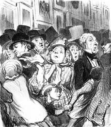
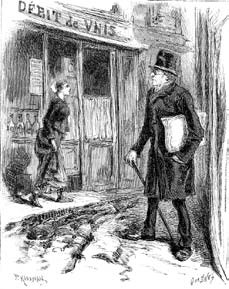

2 Nisan 1897, akşamın geç saatleri
Bu günceyi tutmaya başladığımdan beri bir restorana gitmedim. Bu akşam gideceğim yerde keyfimin bozulmaması için karşılaşacağım herkes öyle sarhoş olmalı ki ne ben onları ne onlar beni tanımalı. Yakınımdaki Anglais Sokağı'nda bulunan ve kim bilir ne zamandan beri ve neden girişin üzerine asılı olan devasa pince-nez gözlükler yüzünden Père Lunette adını taşıyan kabareye gitmeye karar verdim.
Burada yemek yenmez; birkaç parça peynir kemirilir; sahipleri peynirleri neredeyse bedavaya verirler, çünkü bunlar insanı susatır. Sonra sadece içilir ve şarkı söylenir, daha doğrusu mekânın Fifi l'Absinthe, Armand le Gueulard, Gaston Trois-Pattes gibi "sanatçılar"ı söylerler şarkıları. İlk salon bir koridordur ve yarısı uzunlamasına çinko bir banko ile kaplıdır; ardında ise patron, patroniçe, bir de müşterilerin küfür ve kahkahaları arasında uyuyan bir çocuk durur. İçki kadehlerini almış olan müşteriler bankonun önünde ve duvar boyunca uzanan pis masaya dayanabilirler. Bankonun ardındaki rafta Paris'te bulunabilecek en şahane karındeşen içkiler seçkisi sergilenir. Ama gerçek müşteriler dipteki salona geçerler; buradaki iki masanın çevresini saran müşteriler birbirlerinin omuzlarına dayanıp uyurlar. Bütün duvarlar müşterilerin karaladığı eski resimlerle doludur ve bunların neredeyse hepsi açık saçık şeylerdir.
Bu akşam kim bilir kaçıncı absentini yudumlamaya niyetli bir kadının yanına oturdum. Siması tanıdıktı, resimli dergiler için çizim yapan biriydi ama sonra yavaş yavaş işten elini çekmişti, çünkü verem olduğunu ve fazla ömrü kalmadığını biliyordu; şimdi bir kadeh içki karşılığında müşterilerin portrelerini yapıyor ama artık eli de titriyor. Şanslı olursa canını alan verem olmayacak ve o daha önce bir gece karanlığında Bièvre Nehri'ne düşerek kurtulacak bu hayattan.
Onunla üç beş laf ettim (on günden beri öylesine kapandım ki eve, bir kadınla sohbet etmek bile rahatlattı beni) ve ona ikram ettiğim her absent kadehinde bir tane de kendim yuvarladım.
Ve işte şimdi hem zihnim hem görüşüm bulanık ve yazıyorum: Az ve kötü hatırlamak için ideal koşullardayım.
Tek bildiğim Paris'e geldiğimde endişeli olduğum (ne olsa sürgüne yollanmıştım) ama şehir benim kalbimi fethetti ve hayatımın geri kalanını burada yaşamaya karar verdim.
Elimdeki paranın ne kadar dayanacağını bilemediğimden Bièvre bölgesindeki bir otelde oda kiraladım. Şansım yaver gitti de tek başıma bir oda alabildim, çünkü bu tür odalarda genellikle yere on beş döşek serili olur ve bazen penceresi bile yoktur. Eşyalar taşınan birinin evinden arta kalanlardı, çarşaflar kurtluydu, çinko leğen yıkanmaya, kova çiş yapmaya yarıyordu; tek bir iskemle bile yoktu, nerede kalmış sabun ve havlu. Duvardaki bir yazıda anahtarın dıştan kilide takılı bırakılması öneriliyordu; bu da burayı sık sık basan polislere vakit kaybettirmemek için olsa gerekti; polisler odaya dalıyor, uyuyan kişiyi saçından tutup fener ışığında yüzüne bakıyor, tanımadıklarını gerisin geri atıyor, aradıkları kişiyi merdivenlerden aşağı sürüklüyor, direnenleri pataklıyorlardı.
Karın doyurmaya gelince: Petit Pont Sokağı'nda üç kuruşa yemek yenen bir yer keşfetmiştim: Halles'deki kasapların çöpe attığı bozuk etler –yağlı kısımları yeşil, yağsız kısımları kararmış olanlar– şafakta toplanıyor, temizleniyor, üzerine bol tuz ve biber ekiliyor, sirkeye yatırılıyor, kırk sekiz saat avlunun dibinde esintiye karşı asılıyor, sonra da müşteriye sunmaya hazır hale geliyordu. Dizanteri garanti, fiyat yaklaşılabilirdi.
Torino'da edindiğim alışkanlıktan ve Palermo'da yediğim bol yemeklerden sonra, Cavalier Bianco'nun bana yönlendirdiği kişilerden birkaç kuruş kazanmasaydım, kesinlikle birkaç haftada mortu çekerdim. Artık Huchette Sokağı'ndaki Noblot lokantasına takılabiliyordum. Burada eski bir avluya açılan geniş bir salona giriliyordu ve giderken yanında ekmeğini götürmen gerekiyordu. Girişin yanında patroniçe ve üç kızının başında oturduğu bir kasa vardı. Rozbif, peynir, marmelat gibi yiyecekleri hesaplıyorlar, yanında iki ceviz olan pişmiş armut dağıtıyorlardı. En az yarım litre şarap ısmarlayan zanaatkârlar, meteliksiz sanatçılar kasanın arkasına alınıyordu.
Kasayı geçince, üzerinde soslu koyun, tavşan, sığır, bezelye püresi ya da mercimek pişen koca bir fırına varılıyordu. Servis diye bir şey beklenmemeliydi: tabak çatal bulup aşçının önünde sıraya giriliyordu. Birbirlerine çarparak hareket eden konuklar tabaklarını sıkı sıkı tutup koca table d'hôte'a oturuyorlardı. Et suyuna çorba iki, sığır eti dört paraydı, on kuruşa da dışarıdan ekmek alıyordum; böylece kırk kuruşa karnımı doyuruyordum. Bana her şey pek leziz geliyordu ve ayaktakımına karışmak isteyen düzgün insanlar da görüyordum burada.
Öte yandan, Noblot'ya gidebilme şansını elde etmemden önceki günlerde yaşadığım cehennem günlerinden de asla pişman olmadım: Yararlı dostluklar kurdum, sonradan suda balık gibi rahatça dolaşabileceğim ortamlara aşinalık kazandım. Ve bu daracık çıkmaz sokaklarda konuşulanları dinleyerek Paris'in farklı bölgelerinde de Lappe gibi başka sokaklar keşfettim; demirle ilgili her şeyin bulunduğu bu sokak hem esnafa ve ailelere hitap ediyordu hem de maymuncuk, sahte anahtar ve hatta ceketin yenine gizlenebilen ve içe çekilebilen kama gibi ifşa etmesi daha zor konularda hizmet veriyordu.
Odamda mümkün olduğunca az kalmaya gayret ediyor, cebi delik Parislilere özgü keyiflerin tadını çıkartıyor ve bulvarlar boyunca geziniyordum. O zamana dek Paris'in Torino'dan ne kadar büyük olduğunu anlamamıştım. Yanımdan geçen her tabakadan bin bir türlü insanın yarattığı gösteriye bayılıyordum; pek azı alışveriş peşindeydi, çoğunluk birbirini seyrediyordu. Parisli kadınların varlıklı olanları son derece zevkli giyiniyorlardı; giyimleri değilse bile saç şekilleri dikkatimi çekiyordu. Ne yazık ki bu kaldırımlarda bizim cinsimizin dikkatini çekmek için giyim tarzları yaratmakta fesat niyetleri olan Parisli kadınlar da geziniyordu.

Yanımdan geçen her tabakadan bin bir türlü insanın yarattığı gösteriye bayılıyordum...IR 2
Bunlar, benim brasseries à femmes çatısı altında tanıyabileceklerim kadar bayağı olmasalar da, ekonomik koşulları iyi olan beylere hizmet veren fahişelerdi ve kurbanlarını baştan çıkartmak için uyguladıkları şeytani yöntemlerden anlaşılıyordu bu. Daha sonraları beni bilgilendiren bir dostum bir zamanlar bulvarlarda sadece grisette kızların görüldüğünü anlattı; bunlar para peşinde olmayan, düşük sınıflara ait kızlardı; sevgililerinden giysi ya da mücevher istemezlerdi, çünkü sevgilileri kendilerinden daha yoksuldu. Gün geldi Pug ırkından köpekler gibi bunların da soyları tükendi. Sonra lorette veya biche veya cocotte diye bilinen ve grisette'ten daha neşeli ve bilgili kızlar türedi ama bunlar kaşmir ve fırfır peşindeydiler. Benim Paris'e geldiğim dönemde lorette'lerin yerini courtisane kızlar almıştı: Bunlar son derece varlıklı sevgililer, elmaslar, arabalar severlerdi. Bu kızların bulvarlarda gezindiği görülmezdi. Bu kamelyalı kadınlar yürek, duyarlılık ve minnet gibi duygulara yüz vermemeyi ve onlara Opera'da bir loca tutabilen zavallıları mümkün olduğunca sömürmeyi ahlaki ilke edinmişlerdi. Ne iğrenç bir cinsiyet.
Bu arada Clément Fabre de Lagrange ile temas kurmuştum. Torinolular beni mütevazı bir binada bulunan bir büroya yönlendirmişlerdi; binanın bulunduğu sokak mesleğim sayesinde edindiğim sakınganlık yüzünden kimsenin okumayacağını bildiğim bir kâğıt üzerine bile kaydetmeyeceğim türden bir yerdi. Sanırım Lagrange Direction Générale de Sûreté Publique'te Siyasi Masa ile ilgileniyordu ama bu piramidin tepesinde mi yoksa dibinde mi yer aldığını asla anlayamadım. Sanki başka kimseye bilgi vermek durumunda değil gibi görünüyordu ve bana işkence bile yapsalar bütün siyasi bilgi tezgâhı hakkında tek laf bile edemezdim. Aslında Lagrange'ın o binada bir bürosu olup olmadığını bile bilmiyordum: Cavalier Bianco tarafından kendisine iletmek istediğim bir tanıtım mektubum olduğunu bildirmek için ona yazdığımda, beni iki gün sonra Notre Dame Kilisesi'nin avlusuna davet etti. Yakasındaki kırmızı karanfilden tanıyacaktım onu. Ve o günden sonra Lagrange benimle hep bir kabare, bir kilise, bir park gibi en akla gelmez yerlerde buluştu ve asla aynı yere iki kez çağırmadı.
Lagrange, o günlerde belli bir belgeye gereksinme duyuyordu ve ben bunu ona mükemmel biçimde hazırlamıştım; böylelikle beni onaylayarak değerlendirmişti. O günden sonra, buralardaki gayriresmi söylenişle onun indicateur'ü olmuştum ve her ay üç yüz frank artı masraflar için yüz otuz frank alıyordum. Olağandışı durumlarda ve belgelerde bahşiş de kazanıyordum. İmparatorluk muhbirlerine çok para harcar, elbette Sardinya Krallığı'ndan daha fazlasını öder ve duyduğuma göre polisin yıllık yedi milyon franklık bütçesinin iki milyonu siyasi haberler için ayrılıyormuş. Ama bir başka söylentiye göre bütçe on dört milyonmuş ama bununla imparatorun resmigeçitlerindeki şakşakçıların, Mazzini yanlılarına nezaret etmek için yapılan koşuşturmanın, provokatörlerin ve gerçek casusların parası da ödeniyormuş.
Lagrange ile yılda en az beş bin frank kazanıyordum ama onun sayesinde özel bir müşteri kitlesi kazanmıştım ve bunun sayesinde kısa sürede şu anda kullanmakta olduğum stüdyomu (brocantage kisvesi altında) açtım. Sahte vasiyetler ve kutsal ekmek ticaretiyle stüdyom bana beş bin frank daha getiriyordu ve yılda on bin frank kazananlara Paris'te varlıklı burjuva diyorlardı.
Elbette güvenli bir kazanç değildi ve benim hayalim on bin frank kazanç daha doğrusu kâr elde etmek değildi ve –en güvenlisi olan– hazine bonolarının yüzde üçüyle üç yüz bin franklık bir sermaye biriktirmeliydim. Bu o dönemde henüz pek tanınmamış bir noterin değil, courtisane denen kibar fahişelerin kazancıydı.
Bir vurgun beklentisi sürüp giderken artık Paris keyiflerini seyretmekten yaşamaya geçebilirdim. Tiyatroya, aleksandrin vezniyle yazılan o feci trajedilere hiç ilgi duymamışımdır, müze duvarları beni hüzne boğar. Ama Paris'in bana sunduğu daha güzel bir şey vardı: restoranlar.
Kendime –son derece pahalı da olsa– izin verdiğim ilk restoranın adını daha Torino'dayken duymuştum. Bu, Kraliyet Sarayı'nın karşısında yer alan Grand Véfour idi; sanırım Victor Hugo da kuru fasulyeli koyun göğsü yemek için gelirmiş buraya. Beni baştan çıkartan bir başka lokanta da Gramont Sokağı ile Boulevard des Italiens'in köşesinde yer alan Café Anglais oldu. Bir zamanlar arabacıların ve uşakların karın doyurduğu bu lokanta şimdi sofralarında tout Paris'yi ağırlıyordu. Burada pommes Anna, écrevisses bordelaises, mousses de volaille, mauviettes en cerises, petites timbales à la Pompadour, cimier de chevreuil, fonds d'artichauts à la jardinière lezzetlerini ve Champagne şarabıyla yapılan sorbeleri keşfettim. Bu yemeklerin adlarını anarken bile hayatın yaşamaya değer olduğunu hissediyorum.
Restoranların yanı sıra passage'lar da büyülüyordu beni. Örneğin Jouffroy Pasajı'na bayılıyordum; belki bunun bir nedeni de Dîner de Paris, Dîner du Rocher ve Dîner Jouffroy gibi Paris'in en iyi üç restoranını barındırmasıydı. Bugün hâlâ ve özellikle cumartesi günleri bütün Paris bu billur galeride buluşmak için sözleşir ve sıkkın beylerle benim beğenime göre fazla parfümlü bayanlar birbirlerine çarpıp dururlar.
Belki de en çok ilgimi çekeni Passage de Panoramas idi. Burada daha avam bir fauna görülebiliyordu; kentsoylularla, asla satın alamayacakları antikaları gözleriyle yiyen taşralılar, fabrikadan henüz çıkmış genç işçi kızlar bir arada dolaşırlardı. İnsan illa eteklik seyretmek istiyorsa Jouffroy Pasajı'na gidebilirdi ama işçi kızları takip eden yeşil füme camlı gözlükler takan orta yaşlı beyler yani suiveurs, bu galeride bir aşağı bir yukarı turlarlardı. Bütün o işçi kızların gerçekten öyle olduklarından da kuşkulanıyordum: Sade giyimleri, dantel başlıkları, önlükleri olması mutlaka öyle olmaları anlamına gelmeyebilirdi. Parmaklarının ucuna bakmak gerekirdi; iğne deliği, çizik, küçük yanıklar yoksa bu kızların daha rahat bir hayat sürdükleri anlaşılırdı ve bu da peşlerinde dolaşan suiveurs sayesindeydi.
O pasajda ben işçi kızları değil suiveurs'ü süzüyorum (öte yandan, filozof café chantant'da sahneye değil seyirciye bakandır diyen kimdi?). Günün birinde benim müşterim ya da enstrümanım olabilirler. Bazılarını şişman karılarını ve yarım düzine bebelerini kucaklamak için eve dönerlerken de izliyorum. Adresi not ediyorum. Hiç belli olmaz. İmzasız bir mektupla hayatlarını karartabilirim. Günün birinde, diyorum, gerek olursa.

O pasajda ben işçi kızları değil suiveurs'ü süzüyorum...
Lagrange'ın bana başlangıçta verdiği farklı görevlerin neredeyse hiçbirini hatırlayamıyorum. Aklıma tek gelen ad Rahip Boullan, ama bu daha sonraki döneme hatta savaştan az öncesine ya da savaş sonrasına denk düşen günlerde olmalı, çünkü zihnimde savaşla altüst olmuş bir Paris görüntüsü var.
Absent görevini yerine getiriyor ve şu anda bir muma üflesem fitilden koca bir alev tutuşabilir.